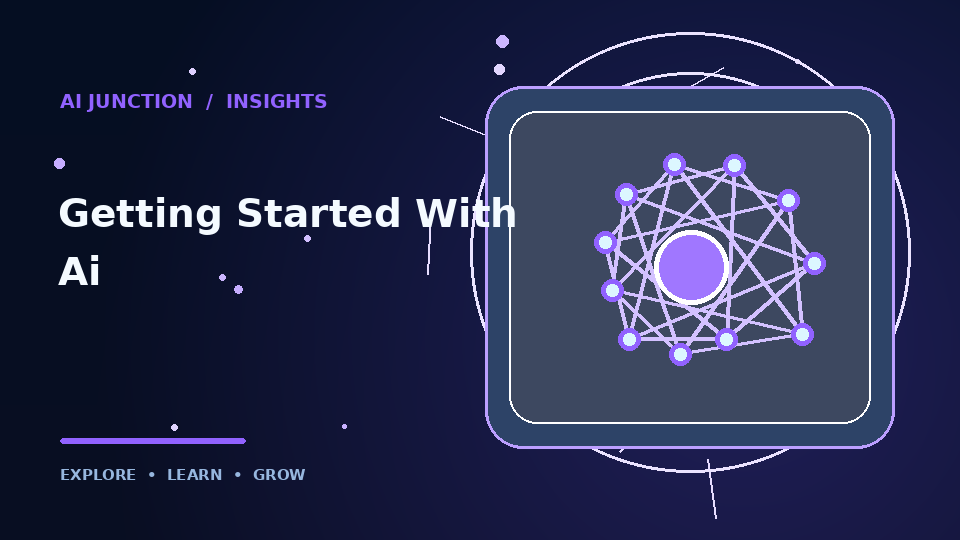
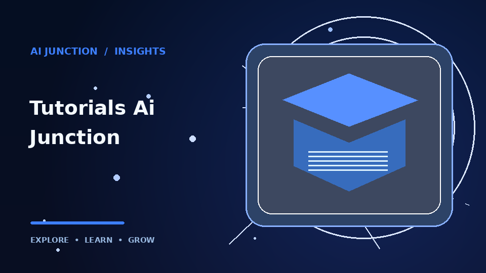
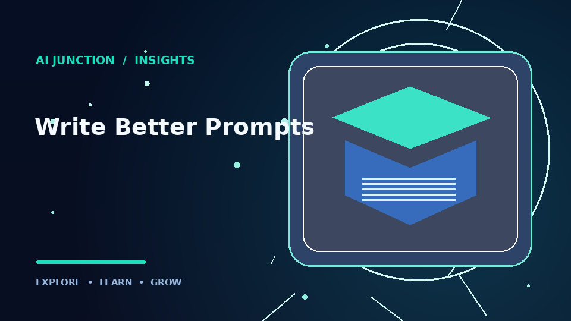
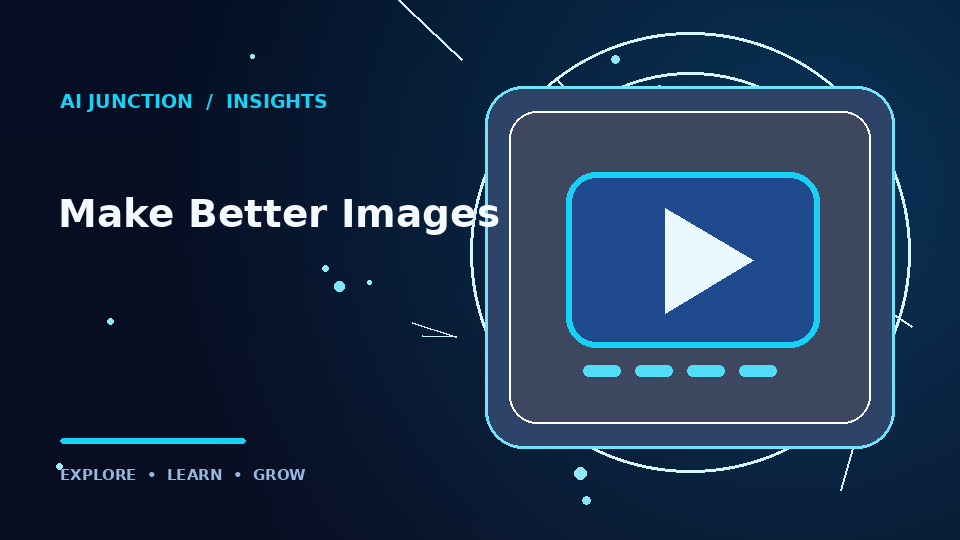
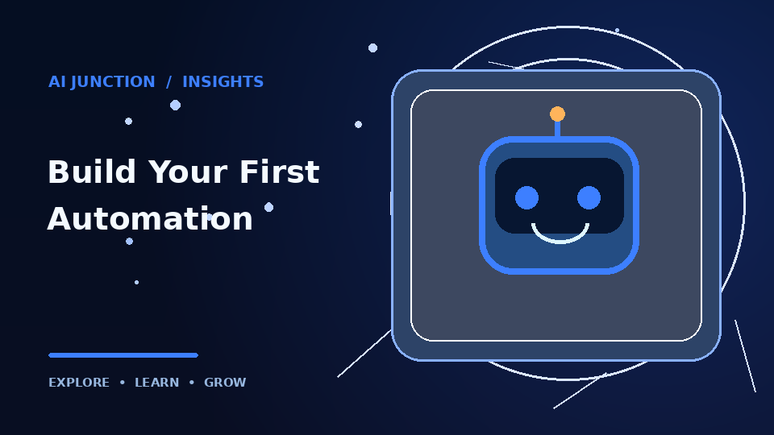
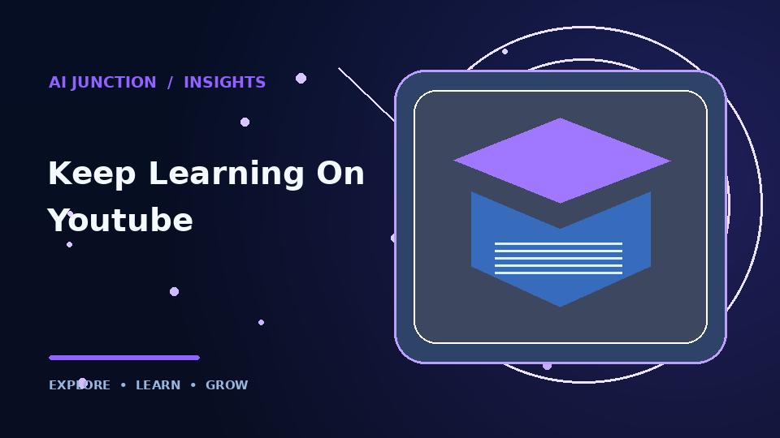

BEGINNER
AI basics for beginners
Learn what AI can and cannot do, and how to evaluate its responses.
Learn the basics, improve prompts and build practical content workflows with AI Junction and AI Unboxed.

Pick a topic that matches your current skill level.

Learn what AI can and cannot do, and how to evaluate its responses.

Use context, goals, constraints and examples to get more useful outputs.
Plan posts, scripts and content calendars while keeping your own creative voice.

Specify subject, lighting, framing, aspect ratio and style with clarity.

Understand triggers, actions and simple workflows before connecting services.
Explore AI demonstrations and creator-friendly learning in Hindi/Hinglish on our YouTube channel.
Open YouTube channel